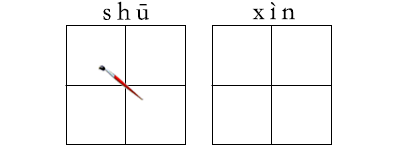
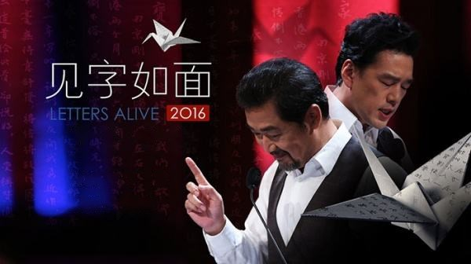

2017-3-14阅读（2,990）


近日，一档书信朗读类节目拨动不少人的心弦。俗话说，见字如面，见信如唔，总有些文字让我们怦然心动。那时通讯很慢，鸿雁传书，含墨情深，等待中也有别样甜美……古时候书信怎么写？问候、思慕之情都如何表达？……

(一)启始
惠书敬悉，甚以为慰。
顷接大示，如见故人。
久不通函，至以为念。
前上一函，谅已入鉴。
近屡奉笺，至感厚谊深情。
接获手书，情意拳拳，至不欢愉。
数奉手书，热情诚挚之情，溢于言表。
日前曾奉尺牍，意其已抵左右。
捧读知已惠书，音容笑颜，历历在目。
昨得书笺，反复读之，深情厚意，感莫能言。
(二)思念
别后月余，殊深驰系。
睽违日久，拳念殷殊。
分手甚久，别来无恙。
故园念切，梦寐神驰。
握别以来，深感寂寞，近况如何，甚念。
鸿雁传来，千里咫尺，海天在望，不尽依依。
相距甚远，不能聚首，转寄文墨，时通消息。
别亦良久，甚以为怀，何日重逢，登高延企。
奉读惠书，宛如天外飞来，回首往事，不啻依稀如昨。
长怀盛德，聊吐愚衷，谨凭鸿雁之传，宁望白云之信。
(三)饮佩
大示拜读，心折殊深。
久钦鸿才，时怀渴谒。
德宏才羡，屡屡怀慕。
久慕英才，拜谒如渴。
顷读诲语，如闻金玉良言，茅塞顿开。
谨蒙诲教，疑或冰释，胜似春风甘霖灌顶。
恩师才高八斗，学富五车，泰山北斗，谁不思慕。
蒙惠书并赐佳作，浩如河汉，理至还必须真，拜服之至。嗣后如有所见，或有新作，望莫遗愚友之驽，尚请随时见示为盼。
先生德高望重，文才武略，贯古今之论，晓中外之文，下风引领，敢下拜嘉。
（四）问病
闻君欠安，甚为悬念。
顷闻您卧榻数日，心甚系念。
闻君甚念，无奈事务缠身，未能前来请安，恳请慎疾自爱。
知尊恙复发，恳祈暂停公务，苓参进，调养莫误，甚念甚念。
尊恙已大愈否?贵体新全，望珍摄自重，衣餐增适，动定咸宜。诸唯珍重，皮之不存，毛岂附焉，来日方长，亟望珍重。
尊恙愈否，念念？
欣闻贵体康复，至为慰藉。
重病新愈，望调养有序，节劳为盼。
闻君抱恙，不胜悬念，特函问候，祝早日康复。
(五)时令问候
春寒料峭，善自珍重。
阳春三月，燕语莺歌，想必神采奕奕。
炎暑日蒸，千万珍重。
盛暑之后，继以炎秋，务望尚自珍为盼。
秋色宜人，望养志和神。
秋风萧萧，至祈摄卫。
日来寒威愈烈火，伏维福躬无恙。
寒风苦雨，恳请厚自珍爱。
近闻贵地大风暴雨，家居安否，念念。
朔风突起，寒潮逼至，想寓中均安？
(六)祝贺
顷闻嘉讯，再祝鸿猷大展，万里鹏程。
欣闻……，谨寄数语，聊表祝贺与希望之心。
喜闻……，由衷快慰，遥祝前程似锦，万事如意。
谨具刀笔书谒，恭贺嘉事吉礼。
1、贺新婚
忽鸣燕贺，且祝新禧。
欣闻足下花烛筵开，奉呈薄礼，聊卺之仪。
附呈微物，聊佐喜仪，忽弃是幸。
喜闻你们有缘终成眷属，至为欣慰。
欣闻你们喜结良缘，无限欣慰。
近闻足下燕尔新婚，特此祝贺。
顷悉你不日西厢叙情，蓝田得玉，天成佳偶，谨祝秦晋和欢，白头偕老。
顷闻吉音，欣逢嘉礼，遥祝如鱼得水，并蒂花开，嘉贺嘉祝。
2、祝寿
×日为先生××大寿，遥祝寿比南山，福如东海。
恭祝延年寿千秋。
谨颂受寿家多，长命百岁。
喜贺福寿双全，恭贺全家安好，寿星永照。
3、贺生儿女
闻育祥麟，谨此恭贺。
闻尊夫妇喜添千金，热忱致贺。(贺生女)
弄璋之喜，可庆可贺。(贺生子)
弄瓦之庆，遥以致贺。(贺生女)
(七)致谢
大示诵悉，深感勤勤恳恳诲人不倦之意。
厚情盛意，应接不遑，切谢切谢。
奉报先生殷殷之谊，当俟异日耳。
感荷高情，非只语片言所能鸣谢。
承蒙谆谆忠告，铭感五衷。
承蒙见教，获益甚多，特上寸笺，以申谢忱。
承蒙惠赠各物，衷心感谢，不胜荣幸。
承蒙存问，且赠佳品，感恩不尽。
如此厚赠，实深惶悚，但来从远道，却之不恭，因即拜领。
(八)致歉
惠书敬悉，甚感盛情，迟复为歉。
奉读惠书，久未作复，罪甚罪甚。
惠书已悉，近因琐务，未即奉答为歉。
数奉台函，未暇修复，抱歉良深。
所询之事，目前尚难奉复，敬请宽裕为怀。
前事有逆尊意，不胜惭愧，万望海涵。
前事有负雅意，十分抱歉，尚希恕之。
见有睽异之处，幸在知己，尚希见宽降恕。
(九)拜托
冒味唐突干请，惟望幸许。
拜托之处，乞费神代办，不胜感荷。
谨布区区，尚希鉴明，费神相助。
所恳之事，若蒙慨允，将不胜感激之至。
特沥寸函布达，祈忽他言推诿。
为书请之，便中还请一询为荷。
乞赐……，以志厚谊。
鉴于此情，望您能大解善囊，尽力相助。
人生友谊，唯君多谊，切望惠泽大诿，鼎力为之。
岁月悠悠，与君多谊，还望滋润再三，泽被延绵
(十)致哀
惊闻××作古，家失栋材，悲痛万分。
尊×猝去，深致哀悼，尚望节哀顺变。
前闻令×逝去，为之惨然，人死不能复生，尚望节哀。
闻悉××仙逝，不胜伤悼，足下遭此不幸，伤感必甚，恳请宽辟哀情，善自珍爱。
死者已矣，生者恳请多多保重。
希高年珍摄，勉抑哀思。谨函驰陈，藉申慰问。
惊承讣告，悲悼不已，凡在相好，无不同深惋惜。
(十一)赠物
奉呈薄资，尚望笑纳为幸。
区区小物两包，聊供途中之需，即乞晒纳。
所奉礼品虽微不足道，但物轻情意重，望勿嫌弃。
千里鹅毛，聊表寸心。
微物奉上，聊祝吉安，幸祈笑纳。
寄奉百元，聊佐薪水，为数甚微，将意而已。
(十二)请教
风雨同舟，愿闻明教。
倘蒙见教，没齿不忘，一日为师，终生为父。
倘承不吝赐教家，幸甚幸甚。
甚盼时赐物，匡我不逮。
得暇望时赐教言为祷。
一切恳请详示，万望莫以鄙陋而不堪教也。
苦有所得，祈随时赐示为盼。
倘有所闻，尚祈见告，俾资改进，不胜为盼。
(十三)商讨
愚直之言，尚祈嘉纳。
蒙雅爱，沥胆直谏。
叨称至好，故敢缄阻，草沥数行，请鉴纳。
相见以诚，请恕不谦。
微开之言，幸无见阔，不胜大愿。
叨在契末，斗胆直陈，伏维朗照，不尽缕衷。
吾敬先生，尤爱真理，故秉笔直陈，希原谅之为祷。
缘承下询，草复寸笺，种种尚须斟酌之处，尊意如何？
此等事本不累述，惟既屡承下问，慨然如感，遂略布鄙怀，万乞曲矛谅察为幸。
(十四)结束
匆此先复，余容后禀。
铁此布臆，余容续陈。
临书仓促，不尽欲言。
日来事冗，恕不多叙。
书不尽意，余言后续。
草率书此，祈恕不恭。
匆此草就，不成文进，原宥是幸。
忙中即书，言不由衷，不足之处，恕见谅。